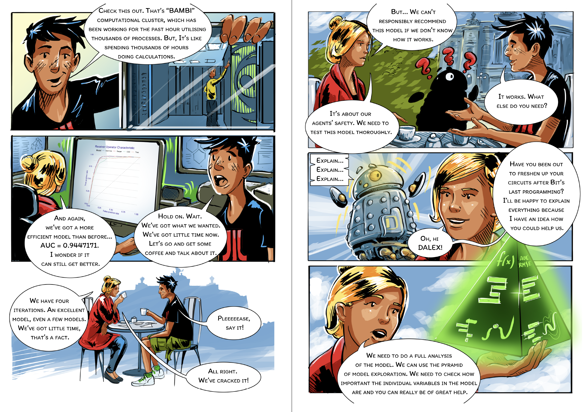
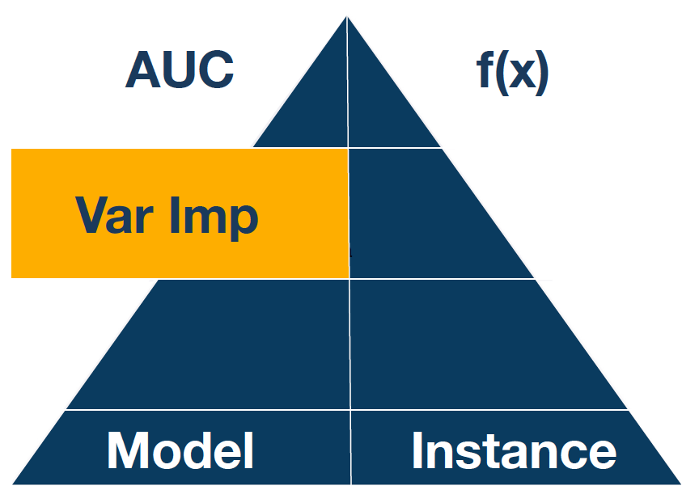
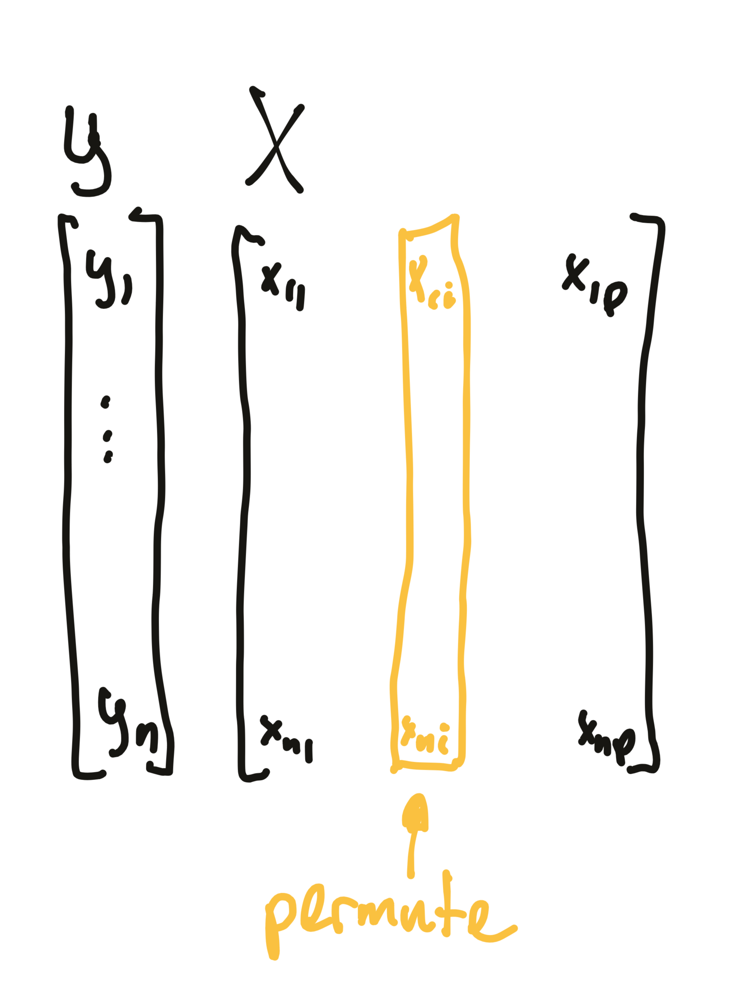
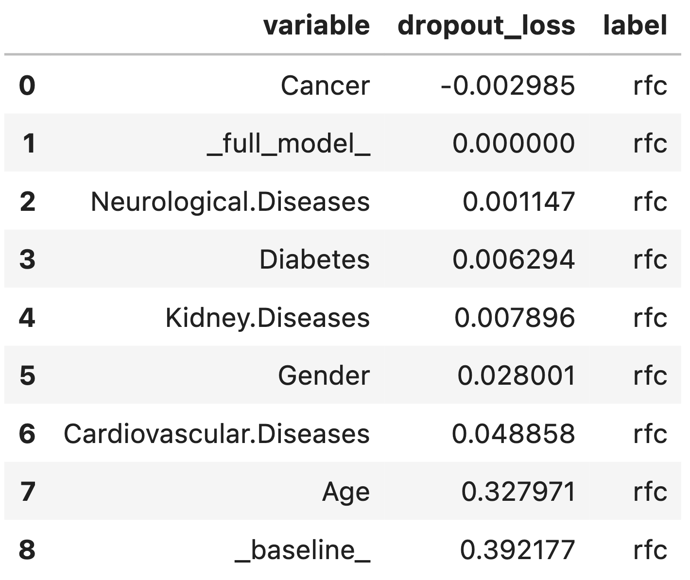
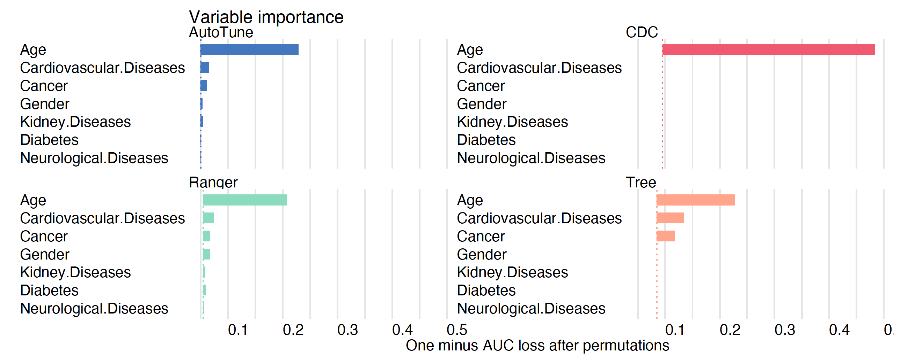

importance_rfc = explainer_rfc.model_parts(
loss_function="1-auc",
type="difference", random_state=0)
importance_rfcStep 6. Variable-importance


The XAI pyramid describes relations between explanatory model analysis techniques. The deeper, the more detailed view into the model.
In the steps so far, we have built four predictive models and tested how well they predict mortality on validation data. Model training is a step that is easy to automate by checking many different families of models and tuning their hyperparameters. The next part is harder to automate since it involves our domain knowledge. With candidate models in place, it’s time to take a closer look at them. In this and the next steps, we will learn techniques to understand how complerx models work. In the case of the CDC or tree model, much can be learned by looking at the model structure. But for more sophisticated models (such as a random forest), we need dedicated model exploration tools. Ladies and gentlemen, it’s time to learn about XAI’s methods.
When we examine a high-dimensional model, one of the first questions that come up are: which variables are important? which features or groups of features significantly affect the model’s performance?
Some models have built-in methods for the assessment of variable importance. For example, for linear models, one can use standardized model coefficients or p-values. For the random forest, one can use out-of-bag classification error. For tree boosting models, one can use information gain statistics. Yet, the problem with such model-specific techniques is that they cannot be compared between models of different structures. For this and a few other reasons, it is convenient to use model agnostic techniques, such as permutational importance of variables.
The permutational variable importance is described in detail in Chapter 16 of Explanatory Model Analysis https://ema.drwhy.ai/featureImportance.html
The procedure is based on perturbations of a selected variable or group of variables. The intuition is that if a variable is important in a model, then after its random perturbation the model predictions should be less accurate.
The permutation-based variable-importance of a variable \(i\) is the difference (or ratio) between the model performance for the original data and the model performance calculated on data with the permuted variable \(i\). More formally
\[ VI(i) = L(f, X^{perm(i)}, y) - L(f, X, y), \]
where \(L(f, X, y)\) is the value of loss function or performance measure for the data \(X\), true labels \(y\) and model \(f\), while \(X^{perm(i)}\) is dataset \(x\) with \(i\)-th variable permuted.

Permutation of variables preserves the marginal distribution while breaking the dependence of that variable on the target.
Note that the importance of the variables defined in such a way can be determined without re-training of the model.
Which performance measure should you choose? It’s up to you. In the dalex library, by default, RMSE is used for regression and 1-AUC for classification problems.
Python snippets
We use the model_parts method from the dalex package to calculate the importance of variables. The only required argument is the model to be analyzed. With additional arguments, one can also specify how the importance of variables is to be calculated, whether as a difference, ratio or without normalization.

This technique is handy when we want to compare the importance of variables in different models. Let’s see what it looks like in our use case. First we calculate variable importance for each model and then we plot them together with the plot method.
importance_cdc = explainer_cdc.model_parts(
loss_function="1-auc", type="difference", random_state=0)
importance_dtc = explainer_dtc.model_parts(
loss_function="1-auc", type="difference", random_state=0)
importance_rfc_tuned = explainer_rfc_tuned.model_parts(
loss_function="1-auc", type="difference", random_state=0)
importance_cdc.plot([importance_rfc, importance_dtc,
importance_rfc_tuned], show=False)
For the CDC model, the only important variable is Age. For the tree model, the three important variables are Age, Cancer, and Cardiovascular diseases, an observation consistent with Figure 3. For the ranger model and the model after tuning of hyperparameters, more variables are taken into account. However, Age is indisputably the most important variable in all models.
The same perturbation technique can be used to analyze the importance of groups of variables. Just use the variable_groups argument. Grouping variables can be particularly useful if the number of variables is large and groups of variables describe some common aspects. In our case we could group all diseases together.
Note that variable importance analysis when variables are correlated must be performed with care. For highly correlated variables, an interesting model exploration technique is triplot, summarising correlation structure via a dendrogram accompanied with the importance of groups of correlated variables. Check out the Aspect module in the dalex package.
R snippets
We use the model_parts function from the DALEX package to calculate the importance of variables. The only required argument is the model to be analyzed. With additional arguments, one can also specify how the importance of variables is to be calculated, whether as a difference, ratio or without normalization.
Row _baseline_ corresponds to the loss function for a model calculated on data in which all variables have been permuted.
mpart_ranger <- model_parts(model_ranger, type="difference")
mpart_ranger
# variable mean_dropout_loss label
# 1 _full_model_ 0.0000000000 Ranger
# 2 Neurological.Diseases 0.0006254491 Ranger
# 3 Gender 0.0030246808 Ranger
# 4 Kidney.Diseases 0.0048972639 Ranger
# 5 Cancer 0.0061278070 Ranger
# 6 Diabetes 0.0076210243 Ranger
# 7 Cardiovascular.Diseases 0.0207565006 Ranger
# 8 Age 0.1580579207 Ranger
# 9 _baseline_ 0.4203818555 RangerThis technique is handy when we want to compare the importance of variables in different models. Let’s see what it looks like in our example. The generic plot function works for any number of models given as consecutive arguments.
mpart_cdc <- model_parts(model_cdc)
mpart_tree <- model_parts(model_tree)
mpart_ranger <- model_parts(model_ranger)
mpart_tuned <- model_parts(model_tuned)
plot(mpart_cdc, mpart_tree, mpart_ranger, mpart_tuned,
show_boxplots = FALSE)
For the CDC model, the only important variable is Age. For the tree model, the three important variables are Age, Cancer, and Cardiovascular diseases, an observation consistent with Figure 5. For the ranger model and the model after tuning of hyperparameters, more variables are taken into account. However, Age is indisputably the most important variable in all models.
The same perturbation technique can be used to analyze the importance of groups of variables. Just use the variable_groups argument. Grouping variables can be particularly useful if the number of variables is large and groups of variables describe some common aspects. In our case we could group all diseases together.
For highly correlated variables, an interesting model exploration technique is triplot, summarising correlations structure via a dendrogram and also show the importance of groups of correlated variables. Still, variable importance analysis when variables are correlated must be performed with care.